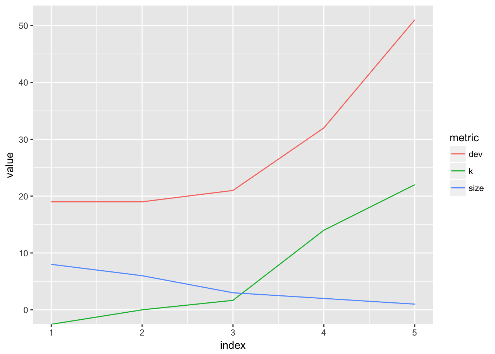
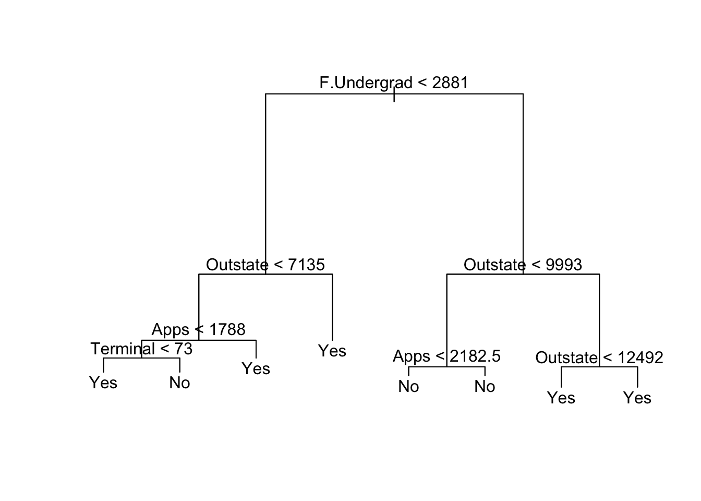
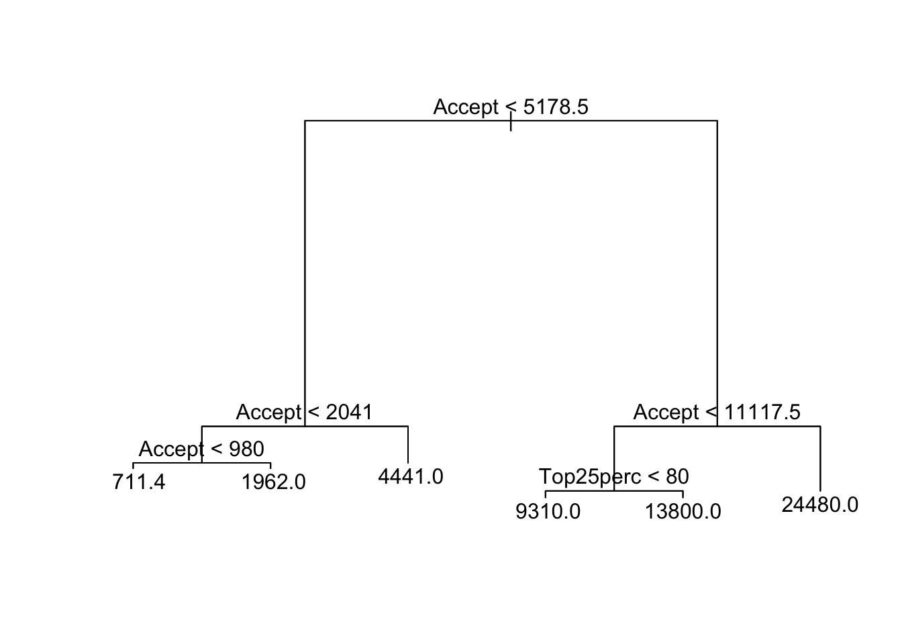

Statistical Learning
Harrison Tietze
Fall 2017
reference: Introduction to Statistical learning (2013) Tibshirani, Hastie
1 Regression Models
1.1 glmnet
In this analysis we will work with the “College” dataset, which contains 777 observations with 18 variables. The goals is to predict how many applications a college will recieve “Apps” based off other predictors.
First examine the structure of the dataset:
str(College)## 'data.frame': 777 obs. of 18 variables:
## $ Private : Factor w/ 2 levels "No","Yes": 2 2 2 2 2 2 2 2 2 2 ...
## $ Apps : num 1660 2186 1428 417 193 ...
## $ Accept : num 1232 1924 1097 349 146 ...
## $ Enroll : num 721 512 336 137 55 158 103 489 227 172 ...
## $ Top10perc : num 23 16 22 60 16 38 17 37 30 21 ...
## $ Top25perc : num 52 29 50 89 44 62 45 68 63 44 ...
## $ F.Undergrad: num 2885 2683 1036 510 249 ...
## $ P.Undergrad: num 537 1227 99 63 869 ...
## $ Outstate : num 7440 12280 11250 12960 7560 ...
## $ Room.Board : num 3300 6450 3750 5450 4120 ...
## $ Books : num 450 750 400 450 800 500 500 450 300 660 ...
## $ Personal : num 2200 1500 1165 875 1500 ...
## $ PhD : num 70 29 53 92 76 67 90 89 79 40 ...
## $ Terminal : num 78 30 66 97 72 73 93 100 84 41 ...
## $ S.F.Ratio : num 18.1 12.2 12.9 7.7 11.9 9.4 11.5 13.7 11.3 11.5 ...
## $ perc.alumni: num 12 16 30 37 2 11 26 37 23 15 ...
## $ Expend : num 7041 10527 8735 19016 10922 ...
## $ Grad.Rate : num 60 56 54 59 15 55 63 73 80 52 ...The variables are numeric, except for the factor: Private. Let’s build a model matrix that automatically creates dummy variables, which is important because glmnet only accepts numeric variables.
X = model.matrix(Apps ~ . - 1, data = College)[, -1]
Y = model.matrix(~ Apps + 0, data = College)
data_df <- as.data.frame(cbind(X, Y))Since we will be testing the performance of multiple models, we need to split the data into a test and training set.
set.seed(1)
train <- sample(1:nrow(X), replace = FALSE, round(nrow(X) * .25))
X.train <- X[train, ]
Y.train <- Y[train]
X.test <- X[-train, ]
Y.test <- Y[-train]Let’s fit a least-squares regression, which can be done using the lm function. The 17 coefficients of the least-squares regression model are fit by minimizing the RSS, the sum of squared residuals.
set.seed(1)
LM.mod <- lm(Apps ~ . , data = data_df, subset = train)
LM.pred <- predict(LM.mod, newdata = data_df[-train, ])
RMSE <- function(x){sqrt(sum((x-Y.test)^2))/length(x)}
Percent.Error <- function(x){RMSE(x)/mean(Y) * 100}
LM.RMSE <- RMSE(LM.pred)
OLS.Percent.Err <- Percent.Error(LM.pred)
my_results <- tibble(model = "OLS",
RMSE = LM.RMSE,
)
knitr::kable(my_results, digits = 3)| model | RMSE |
|---|---|
| OLS | 45.324 |
The RMSE can be interpreted as an estimate for the standard deviation of predicted values. In the context of our College data, given a new set of observations, we could estimate the amount of applications a college will receive by the RMSE. The percent error, given by the RMSE over the average value of Y, gives an estimate of percent average deviation of our prediction. This helps interpret the error, given the average college receives 3002 and our percent error is 1.5099806%.
1.2 Ridge Regression
Ridge regression fits a linear model by minimizing the quanitity \(RSS + \lambda \sum_{j=1}^p\beta_j^2\), where \(\lambda \sum_{j=1}^p\beta_j^2\) also written \(\lambda||\beta||^2\) is called a shrinkage penalty and \(\lambda \geq 0\) is called a tuning parameter. At the extremes, \(\lambda = 0\) returns the least-squares estimate, and \(\lambda \rightarrow \infty\) returns the null model, where all the predictors are forced to \(0\). Note, that shrinkage is not applied to the intercept. Instead we first center the inputs and then estmiate \(\beta_0\) by \(\overline{y}\). Centering is also necessary because unlike in OLS, the scale of the predictors can influence the estimate. Centering predictors is done by dividing by their standard deviation: \(\tilde{x_{ij}} = \frac{x_{ij}}{\sqrt{\sum_{i=1}^N(x_{ij}-\overline{x_j})^2}}\). The \(\tilde{x_{ij}}\) are called standardized predictors and are used to compute standardized coefficients.
Unlike the least squares estimate which produces only one set of coefficients, ridge regression computes a path of coefficients \(\beta^R_{\lambda}\) which is a \(p-\)dimensional sequence indexed by \(\lambda\). Cross validation must be used the to select the \(\lambda\) such that \(\beta^R_{\lambda}\) minimizes the out-of-sample error.
Let’s fit a ridge regression. Also, we can manually specify a grid of values for \(\lambda\):
set.seed(1)
grid <- 10^ seq (10,-2, length =100)
ridge.mod <- glmnet(X.train, Y.train, alpha = 0, lambda = grid)
# alpha = 0 specifies that we are using a Ridge Regression.
# glmnet automatically does centering first; Standardize = TRUE by defaultThe glmnet object has several useful accessor methods that return information about the model. coef returns a matrix of coefficients. There are 19 rows, one for each coefficient, and 100 columns corresponding to different lambda values.
dim(coef(ridge.mod))## [1] 18 100The lambda attribute returns the lambda values we generated. Let’s looks at the coefficients calculated for the 10th, 50th, and 90th lambda.
el2norm <- function(x){sqrt(sum(x^2))}
el2norm.r <- function(col){el2norm(coef(ridge.mod)[, col])}
coef(ridge.mod)[,c(10,50,90)] %>% rbind( map_dbl(c(10,50,90), el2norm.r) ) %>% rbind(ridge.mod$lambda[c(10,50,90)])## 20 x 3 sparse Matrix of class "dgCMatrix"
## s9 s49 s89
## (Intercept) 3.118028e+03 -2.415997e+03 231.81608434
## PrivateYes -2.696165e-02 -4.964185e+02 -661.19247088
## Accept 9.715573e-06 3.134358e-01 1.77826472
## Enroll 2.662444e-05 6.947055e-01 -1.27533920
## Top10perc 6.794253e-04 1.488282e+01 86.92547784
## Top25perc 5.983285e-04 1.088166e+01 -34.94138769
## F.Undergrad 5.199477e-06 1.273835e-01 0.05419474
## P.Undergrad 1.213187e-05 2.309573e-01 -0.03056227
## Outstate 3.958645e-07 7.614102e-03 -0.12828208
## Room.Board 4.759186e-06 1.399616e-01 0.28313187
## Books 3.523183e-05 5.714569e-01 0.26976880
## Personal 8.369619e-06 8.288952e-02 0.11487261
## PhD 6.726713e-04 8.114758e+00 -12.36805850
## Terminal 7.243822e-04 7.233512e+00 2.82203511
## S.F.Ratio 5.516312e-04 1.154257e+01 -13.51179410
## perc.alumni -3.098273e-04 -8.365358e+00 -1.81119850
## Expend 1.634436e-06 3.524842e-02 0.02118322
## Grad.Rate 3.206191e-04 8.064134e+00 8.80381612
## 3.118028e+03 2.466617e+03 707.19190066
## 8.111308e+08 1.149757e+04 0.16297508The last two rows are the l-2-norm and the \(\lambda\) value. We can see that for \(\lambda = .16\) we have the highest shrinkage of the coefficients
We can also use the predict method to estimate coefficients at a new value of \(\lambda\), say \(\lambda = 80\)
predict(ridge.mod, s=80, type="coefficients")## 18 x 1 sparse Matrix of class "dgCMatrix"
## 1
## (Intercept) -2.698107e+02
## PrivateYes -6.121242e+02
## Accept 1.593882e+00
## Enroll -5.005744e-01
## Top10perc 7.060799e+01
## Top25perc -2.290605e+01
## F.Undergrad 3.085139e-03
## P.Undergrad -1.522212e-04
## Outstate -1.151999e-01
## Room.Board 3.024099e-01
## Books 2.723027e-01
## Personal 6.011289e-02
## PhD -1.064534e+01
## Terminal -5.831304e-01
## S.F.Ratio -9.814125e+00
## perc.alumni -3.127758e+00
## Expend 2.834260e-02
## Grad.Rate 1.017593e+01Let’s also look a the %Dev column when we print our model directly.
# print(ridge.mod) output is too long%Dev is the Null Deviance of the model. If the Null Deviance is very small, it signifies that the proposed model does not perform better than the null model. We can see that when lambda is very high, the %Dev is almost 0, but increases as lambda decreases, and the penalty on the coefficients is relaxed.
Rather than supplying a pre-defined grid, we can use cross-validation to select the best lambda. The function cv.glmnet not only fits 100 models, but it tells us which one is the best.
set.seed(1)
ridge.cv <- cv.glmnet(X.train, Y.train, alpha = 0)
ridge.pred <- predict(ridge.cv, s="lambda.min", newx = X.test)
ridge.RMSE <- RMSE(ridge.pred)
bestlam <- ridge.cv$lambda.minHere cv.glmnet uses 10-fold cross validation (by default) and returns a cv.glmnet object containing a sequence of models. The model that miminimized the MSE can be found using lambda.min. Here the best lambda is 523.658 and its corresponding estimate of the test error is 44.828. We could access the coefficients of this model by calling coef(ridge.cv, s = "lambda.min") and calculate their l-2-norm 1428.74.
1.3 The Lasso
The Lasso is similar to ridge regression, except that the penalty is applied to the l-1-norm norm of the coeffiecients: \(||\beta||_1\). That is, the lasso selects the best model by minimizing the quantity \(RSS + \lambda\sum_{j=1}^p|\beta_j|\). Unlike Ridge regression, however, the lasso shrinks some of the coefficients to zero, and thus performs variable selection. The advantage of the lasso is that it yields sparse models with less coefficients are easier to interperet.
set.seed(1)
lasso.cv <- cv.glmnet(X.train, Y.train, alpha = 1)
lasso.lam <- lasso.cv$lambda.min
coef(lasso.cv, s = "lambda.min")## 18 x 1 sparse Matrix of class "dgCMatrix"
## 1
## (Intercept) -103.66573558
## PrivateYes -580.85348775
## Accept 1.70406630
## Enroll -0.78559016
## Top10perc 74.87113588
## Top25perc -24.96415815
## F.Undergrad .
## P.Undergrad .
## Outstate -0.11343325
## Room.Board 0.26498802
## Books 0.22454134
## Personal 0.07655156
## PhD -9.13154723
## Terminal .
## S.F.Ratio -7.85770983
## perc.alumni -0.62191812
## Expend 0.01889981
## Grad.Rate 7.33869822lasso.mod <- glmnet(X.train, Y.train, alpha = 1, lambda = grid)
lasso.pred <- predict(lasso.mod, s=lasso.lam, newx = X.test)We can see that some of the variables have been dropped.
lasso.RMSE <- RMSE(lasso.pred)
my_results <- rbind(my_results, list("Ridge", ridge.RMSE), list("Lasso", lasso.RMSE))
knitr::kable(my_results, digits = 3)| model | RMSE |
|---|---|
| OLS | 45.324 |
| Ridge | 44.828 |
| Lasso | 43.967 |
For some reason, the ridge and lasso perform substantially worse than the ordinary least squares model.
1.4 Principle Components Regression
library(pls)
set.seed(1)
PCR.mod <- pcr(Apps ~ ., subset = train, data = data_df, validation = "CV")
validationplot(PCR.mod, val.type = "MSEP")The validation plot compares the performance of PCR based off the number of components that are chosen. The MSEP axis is actually the RSME used to measure the training error. The error stabilizes around 5 or 6 components, and overall decreases monotonically as we include more components. Using all components would defeat the purpose of PCR and actually return the OLS solutions, where each variable is its own component.
summary(PCR.mod)## Data: X dimension: 194 17
## Y dimension: 194 1
## Fit method: svdpc
## Number of components considered: 17
##
## VALIDATION: RMSEP
## Cross-validated using 10 random segments.
## (Intercept) 1 comps 2 comps 3 comps 4 comps 5 comps 6 comps
## CV 5009 4484 2545 2515 2144 1938 1914
## adjCV 5009 4649 2535 2504 2085 1901 1880
## 7 comps 8 comps 9 comps 10 comps 11 comps 12 comps 13 comps
## CV 1908 1988 1992 1915 1899 1906 1959
## adjCV 1875 1947 1950 1874 1857 1864 1914
## 14 comps 15 comps 16 comps 17 comps
## CV 1924 1818 1820 1819
## adjCV 1885 1775 1777 1775
##
## TRAINING: % variance explained
## 1 comps 2 comps 3 comps 4 comps 5 comps 6 comps 7 comps
## X 46.99 87.98 95.51 97.64 98.71 99.53 99.93
## Apps 30.24 78.36 79.67 92.75 92.79 92.83 92.85
## 8 comps 9 comps 10 comps 11 comps 12 comps 13 comps 14 comps
## X 99.98 100.00 100.00 100.00 100.00 100.00 100.00
## Apps 93.06 93.06 93.78 94.18 94.18 94.19 94.24
## 15 comps 16 comps 17 comps
## X 100.00 100.00 100.0
## Apps 95.09 95.09 95.2The summary which reveals the training error and variance explained per number of components included, further shows that including more than 6 components gives no benefit. However it may be best to use even less components to create a better model. Three components should work, since it explains 93% of the variance.
PCR.pred <- predict(PCR.mod, X.test, ncomp = 3)
PCR.RMSE <- RMSE(PCR.pred)
my_results <- rbind(my_results, list("PCR", PCR.RMSE))
knitr::kable(my_results, digits = 3)| model | RMSE |
|---|---|
| OLS | 45.324 |
| Ridge | 44.828 |
| Lasso | 43.967 |
| PCR | 73.931 |
1.5 Partial Least Squares
Partial least sqaures is a supervised alternative to principle components regression. PLS attempts to choose components that explain variance in both the predictors and response.
set.seed(1)
PLS.mod <- plsr(Apps ~ ., data = data_df, subset = train, validation = "CV")
summary(PLS.mod)## Data: X dimension: 194 17
## Y dimension: 194 1
## Fit method: kernelpls
## Number of components considered: 17
##
## VALIDATION: RMSEP
## Cross-validated using 10 random segments.
## (Intercept) 1 comps 2 comps 3 comps 4 comps 5 comps 6 comps
## CV 5009 2540 2604 2246 1901 1916 1921
## adjCV 5009 2518 2624 2206 1868 1882 1886
## 7 comps 8 comps 9 comps 10 comps 11 comps 12 comps 13 comps
## CV 1980 2007 1976 1895 1900 1875 1832
## adjCV 1941 1964 1912 1853 1856 1826 1788
## 14 comps 15 comps 16 comps 17 comps
## CV 1818 1822 1824 1819
## adjCV 1775 1778 1779 1775
##
## TRAINING: % variance explained
## 1 comps 2 comps 3 comps 4 comps 5 comps 6 comps 7 comps
## X 43.67 82.78 92.34 97.64 98.49 99.02 99.56
## Apps 79.68 82.55 90.51 92.83 92.89 92.97 93.05
## 8 comps 9 comps 10 comps 11 comps 12 comps 13 comps 14 comps
## X 99.98 99.98 100.0 100.00 100.00 100.00 100.00
## Apps 93.09 94.17 94.2 94.54 95.09 95.09 95.09
## 15 comps 16 comps 17 comps
## X 100.00 100.00 100.0
## Apps 95.09 95.12 95.2validationplot(PLS.mod)
We can see that 3 components explains about 93% of the variance and gives a low training RMSE. It’s better to keep the amount of components lowe to decrease the variance of the model, even if more components give slightly lower training RMSE.
PLS.pred <- predict(PLS.mod, X.test, ncomp = 3)
PLS.RMSE <- RMSE(PLS.pred)
my_results <- rbind(my_results, list("PLS", PLS.RMSE))
knitr::kable(my_results, digits = 3)| model | RMSE |
|---|---|
| OLS | 45.324 |
| Ridge | 44.828 |
| Lasso | 43.967 |
| PCR | 73.931 |
| PLS | 53.542 |
Since PLS supervises the choice of components, it can be more effective than PCR for a regression problem when using less components. Notice how the RMSE at 1 component is alsmost 3 times that for PCR than PLS, but it becomes about equal for the inclusion of more components.
2 Simplifying with Caret
In this section, I write a function using caret to train all the models at once. Each model’s parameters is optimized by cross validation automatically, as specified in the trainControl function.
set.seed(1)
library(caret)
caret_RMSE <- function(x){sqrt(sum((x-Y.test)^2))/length(x)}
trainControl <- trainControl(method="cv", number=5)
my_caret <- function(method_name){
#this function accepts the name of the method and returns its RMSE from testing it on our specified College dataset
method_fit <- train(Apps~., data=data_df, method=method_name, metric="RMSE", preProc=c("center","scale"), trControl=trainControl)
method_predictions <- predict(method_fit, X.test)
method_RMSE <- caret_RMSE(method_predictions)
list(method_name, method_RMSE)
}
caret_names <- list("lm", "lasso", "ridge", "glmnet", "pcr", "pls", "lars")Now I write a short pipeline to run the my_caret function on the list of method names and display the my_results in a nice table.
map(caret_names, my_caret) %>%
transpose() %>%
map(unlist) %>%
set_names(c("models","RMSE")) %>%
as_tibble() %>%
arrange(RMSE)->
caret_table
knitr::kable(caret_table, digits = 3, booktabs = TRUE, caption = "Result produced by Caret. Models arranged by RMSE.")| models | RMSE |
|---|---|
| lasso | 40.485 |
| glmnet | 40.490 |
| ridge | 40.574 |
| lm | 40.579 |
| lars | 40.579 |
| pls | 48.381 |
| pcr | 69.426 |
The my_results are quite similar to running each model individually.The models seem to perform slightly better under caret, probably because of the preprocessing and optimization of parameters done by the caret algorithm.
3 Subset selection
3.1 Best Subset Selection
Subset selection is a technique for selecting a subset of your original varaible to be predictors in your model. For example, let’s say we want to fit a least squares model to the training data, but we suspect that it will generalize better to testing data if we keep fewer variables. Perhaps some are reduntant or lack predictive power. In the Best Subset Selection procedure, we consider all possible models. Since we are working with the College data which has 17 predictor variables, this will require fitting \[\binom{17}{0} + \binom{17}{1} + \binom{17}{2} + \dots + \binom{17}{17} = \sum_{k = 0}^{17}\binom{17}{k} = 2^{17}\] models. A quick aside regarding the combinatoric identity: \(\sum_{k = 0}^{p}\binom{p}{k} = 2^{p}\). It arises from the question, what is the cardinality of the power set of a set containing \(n\) objects. That is, how many distinct subsets can be created from this set. We can apprach this two ways: iterate over each element and decide whether or not to include it in your subset: this gives \(2^p\) choices. Or compute individually the amount of subsets of size \(k\) from \(0\leq k \leq n\) by taking combinations, and then summing the counts. These two approaches are identical, hence the formula. Let’s apply:
library(leaps)
BEST.mod_9 = regsubsets(Apps ~ ., data_df)
summary(BEST.mod_9)## Subset selection object
## Call: regsubsets.formula(Apps ~ ., data_df)
## 17 Variables (and intercept)
## Forced in Forced out
## PrivateYes FALSE FALSE
## Accept FALSE FALSE
## Enroll FALSE FALSE
## Top10perc FALSE FALSE
## Top25perc FALSE FALSE
## F.Undergrad FALSE FALSE
## P.Undergrad FALSE FALSE
## Outstate FALSE FALSE
## Room.Board FALSE FALSE
## Books FALSE FALSE
## Personal FALSE FALSE
## PhD FALSE FALSE
## Terminal FALSE FALSE
## S.F.Ratio FALSE FALSE
## perc.alumni FALSE FALSE
## Expend FALSE FALSE
## Grad.Rate FALSE FALSE
## 1 subsets of each size up to 8
## Selection Algorithm: exhaustive
## PrivateYes Accept Enroll Top10perc Top25perc F.Undergrad
## 1 ( 1 ) " " "*" " " " " " " " "
## 2 ( 1 ) " " "*" " " "*" " " " "
## 3 ( 1 ) " " "*" " " "*" " " " "
## 4 ( 1 ) " " "*" " " "*" " " " "
## 5 ( 1 ) " " "*" "*" "*" " " " "
## 6 ( 1 ) " " "*" "*" "*" " " " "
## 7 ( 1 ) " " "*" "*" "*" "*" " "
## 8 ( 1 ) "*" "*" "*" "*" " " " "
## P.Undergrad Outstate Room.Board Books Personal PhD Terminal
## 1 ( 1 ) " " " " " " " " " " " " " "
## 2 ( 1 ) " " " " " " " " " " " " " "
## 3 ( 1 ) " " " " " " " " " " " " " "
## 4 ( 1 ) " " "*" " " " " " " " " " "
## 5 ( 1 ) " " "*" " " " " " " " " " "
## 6 ( 1 ) " " "*" "*" " " " " " " " "
## 7 ( 1 ) " " "*" "*" " " " " " " " "
## 8 ( 1 ) " " "*" "*" " " " " "*" " "
## S.F.Ratio perc.alumni Expend Grad.Rate
## 1 ( 1 ) " " " " " " " "
## 2 ( 1 ) " " " " " " " "
## 3 ( 1 ) " " " " "*" " "
## 4 ( 1 ) " " " " "*" " "
## 5 ( 1 ) " " " " "*" " "
## 6 ( 1 ) " " " " "*" " "
## 7 ( 1 ) " " " " "*" " "
## 8 ( 1 ) " " " " "*" " "Th asterix indicated whether the variable is included in the model. The row indices indicate a model of that many variables, so each row is a separate model, each one containing one more variable than in the previous row. The algorithm calculates only up to 9-variable models by default. Lets try setting nvmax = 17 to include all models, and then extract some statistics.
BEST.mod_17 <- regsubsets(Apps ~ ., data_df, nvmax = 17)
bmod.summary <- summary(BEST.mod_17)show_metrics <- function(my_summary){
metrics <- c("adjr2", "rsq", "bic", "cp")
best_df <- as.data.frame(`[`(my_summary, metrics))
best_df_melt <- best_df %>% gather(key = "metric", value = "value") %>% mutate(model = rep(1:17, 4))
(ggplot(data = best_df_melt, aes(x = model, y = value, color = metric)) +
geom_line() +
facet_grid(metric ~ ., scales = "free_y")) %>% print()
c(map_dbl(best_df[c("adjr2", "rsq")], which.max), map_dbl(best_df[c("bic", "cp")], which.min))
}show_metrics(bmod.summary)
## adjr2 rsq bic cp
## 13 17 10 12The graphs show how the error metric changes as we introduce more variables into the model. They seem to drop off rapidly and then hit a max or min, as displayed in the table.
3.2 Estimates of Test error
These statistics are intended to estimate the test error of the model by making an adjustment to the training error to account for the bias due to overfitting in the training process.
Let’s interperet each of these statistics (exact formulas can be looked up):
\(R^2_{adj}\) modifies the denominator of \(RSS\) in \(R^2\) to \(RSS/(N - p - 1)\), where \(p\) is the number of predictor variables in our model, thus inflating the error as we add more predictors. Unlike \(R^2\) which will increase monotincally with additionaly variables,\(R^2_{adj}\) penalizes the addition of noise variables. Both these statistics measure the goodness-of-fit of the model on a scale of \(0\) to \(1\), so we want to choose the model that maximizes them.
\(C_p\) adds a penalty of \(p *\hat{\sigma}\) to the RSS, where sigma estimates the variance in the response. Clearly \(C_p\) increases with more predictors, so we want to minimize it.
\(AIC\) is proportional to \(C_p\) so it should be minimized
\(BIC\) adds a term of \(log(N) * p * \hat{\sigma}^2\) to the \(RSS\) where \(N\) is the number of obserations, so it penalizes models with many variables and observations. Thus, we want to mimize it. The more severe penalty given by the \(BIC\) also explains why it chose the sparsest model.
3.3 Forward Selection
Clearly Best Subset selection is very computationally intensive, so shorter alternatives have been developed. Forward Selection works by adding in the best variable at each stage. That is, it chooses to include the variable that minimizes the model’s RSS, and then keeps that variable while choosing a new one from the remaining variables, until all are used. This my_results in having to test \(1 + \sum_{k=0}^{p-1}p - k = 1 + \frac{p(p+1)}{2}\) models. In our College dataset, \(p = 17\), so the total number of models we fit is \[1 + 17 + 16 + \dots + 2 + 1 = 1 + \frac{(17)(18)}{2} = 154\] This is substantially less computation. Note that the additional one is from fitting the null model. At each stage the best variable is chosen by comparing \(R^2\) amongst the different possible models. At the end, we get \(p+1\) models: \(M_0, \dots, M_{17}\). Since these models do not have the same number of variables, we cannot compare them directly using \(R^2\) (it will increase monotionically). Instead we can use one of the alternative metrics listed earlier.
FWD.mod <- regsubsets(Apps ~ ., data = data_df, nvmax = 17, method = "forward")
sum.FWD <- summary(FWD.mod)
show_metrics(sum.FWD)
## adjr2 rsq bic cp
## 13 17 10 12The metrics are the same for both methods.
Let’s compare the speed of these algorithms.
BEST_time## Unit: milliseconds
## expr min lq
## regsubsets(Apps ~ ., data = data_df, nvmax = 17) 3.004913 3.500291
## mean median uq max neval
## 5.13265 4.310343 6.365104 15.36862 100FWD_time## Unit: milliseconds
## expr
## regsubsets(Apps ~ ., data = data_df, nvmax = 17, method = "forward")
## min lq mean median uq max neval
## 2.683556 3.071442 4.420644 3.354546 3.782163 78.56575 100We can see that forward selection is on average a few miliseconds faster than the full model selection.
Let’s compare the models they selected as determined by the BIC. Since the BIC was minimized by the model with 10 variables, we can see if they are the same variables for the Best subset and Forward selection.
sum.FWD$which[10, ] == bmod.summary$which[10, ]## (Intercept) PrivateYes Accept Enroll Top10perc Top25perc
## TRUE TRUE TRUE TRUE TRUE TRUE
## F.Undergrad P.Undergrad Outstate Room.Board Books Personal
## TRUE TRUE TRUE TRUE TRUE TRUE
## PhD Terminal S.F.Ratio perc.alumni Expend Grad.Rate
## TRUE TRUE TRUE TRUE TRUE TRUEIt looks like both methods give the same my_results. Therefore we can opt for the faster, forward selection method. However, this was a small data set. my_results may vary for large high-dimensional data.
4 Decision Trees
4.1 Fitting Classification Trees
In this setion I we will fit a classification tree to the College data set to predict whether or not a college is private. In fact, we use the original dataset, not the data_df that encodes the private factor as a dummy variable.
library(tree)
tree.College <- tree(Private ~ ., data = College)
summary(tree.College)##
## Classification tree:
## tree(formula = Private ~ ., data = College)
## Variables actually used in tree construction:
## [1] "F.Undergrad" "Outstate" "P.Undergrad" "Top10perc" "perc.alumni"
## [6] "Enroll"
## Number of terminal nodes: 10
## Residual mean deviance: 0.2563 = 196.6 / 767
## Misclassification error rate: 0.04891 = 38 / 777The misclassification error rate, which is the training error rate, is about \(5%\), which is quite good. The deviance reported is given by \[-2\sum_m\sum_kn_{nm}\log\hat{p}_{mk}\] Where \(n_{mk}\) is the number of observations in the \(m\)th terminal node that belong to the \(k\)th class. Where \(m\) is the number of terminal nodes of the tree, 10 in this case, and \(k\) can take \(2\) values: one for each class label (public or private). \(\hat{p}_{mk}\) is the class propotion for a specific node, so in this case it is \(\frac{n_{mk}}{n_{m1} + n_{m2}}\) for \(k = 0\) or \(k=1\). We can see that this formula for deviance looks like the cross-entropy. It follows that we can interpret it as a cumulative measure of node purity. To elaborate let’s discuss how the decision trees work. They divide up the predictor space into \(m\) regions which can be visualized as a cut-up rectangular box where each box is the region, or an upside-down tree where the terminal leaves are the regions.
For a classification tree, the class label that is a assigned to a data point in a certain region of the predictor space is the majority vote of class labels in that region. Since we only have 2 class labels, it would be whichever label is dominant. Therefore, misclassification error occurs when there are training points in a region where the majority vote has a different label. That’s why we want to measure the region’s or node’s purity: the percentage of training points that belong to a single label. By maximizing the purity, we minimize the training error. An easily interpretable measure of node purity is the Gini index: \[G = \sum_{k=1}^K\hat{p}_{mk}(1-\hat{p}_{mk})\] which gives the purity for the \(m\)th node. If all the training labels belong to almost a single class \(k\), we can see that \(G\) is almost 0 and the node is very pure. The cross-entropy and similarly the deviance have a similar interpretaion to the Gini index, and thus we want to minimize them to get the best classfier.
The residual mean deviance statistic reported is simply the deviance divided by \(n - |T|\) where \(n = 777\) is the number of observations, and \(|T| = 10\) is the number of terminal nodes. A small RMD indicates that the tree provides a good fit to the data.
We can print out a visual representation of the tree.
plot(tree.College)
text(tree.College)We can see the most important determining variable is the number of full time undergraduates. From the leftmost branch we can see that a second split of the F.Undergrad predictor was significant: smaller schools tend to be private. The out-of-state tuition is also an important fact: schools with smaller enrollments but higher tuition tend to be private, and if the tuition is just really high, it is probably private. Private schools also have a larger percentage of alumni who donate back.
To get an estimate of the test error we need to split the data into a training and validation set.
College.test <- College[-train, ]
Private.test <- College$Private[-train]
tree.college <- tree(Private ~ ., data = College, subset = train)
tree.pred <- predict(tree.college, College.test, type = "class")
tree.table <- table(tree.pred, Private.test)The table function gives a confusion matrix to explain the performance of the classifier:
tree.table## Private.test
## tree.pred No Yes
## No 133 31
## Yes 31 388By dividing the counts in the off-diagonal by the total observations, we get the misclassification error:
error_rate = function(myTable) {(myTable[1,2] + myTable[2, 1]) / (sum(myTable))}
tree_error = error_rate(tree.table)
tree_error## [1] 0.10634654.2 Cost-complexity pruning
Fitting a deep classification tree may produce good predictions on the training set but is likely to overfit the data, leading to poor performance on the test set. It may be better to build a less complex tree that has more bias but lower variance when we test it against new data. To accomplish this we can use a formula that penalizes the complexity, or number of terminal nodes of the tree: \[\sum_{m = 1}^{|T|}\sum_{i:x_i\in R_m}(y_i - \hat{y_{R_m}})^2+\alpha |T|\] Alpha is the tuning parameter that adds a penalty for more leaves. When alpha is 0, we get the original tree. As it increases, we get a sequence of subtrees, with less or equal node to the previous tree. Cross validation can be used to select the optimal value for alpha. This process is done on the training data set. Once we choose an alpha, we can test that tree’s performance on the test set.
set.seed(1)
cv.college = cv.tree(tree.college, FUN = prune.misclass)
cv.college## $size
## [1] 8 6 3 2 1
##
## $dev
## [1] 19 19 21 32 51
##
## $k
## [1] -Inf 0.000000 1.666667 14.000000 22.000000
##
## $method
## [1] "misclass"
##
## attr(,"class")
## [1] "prune" "tree.sequence"best_size <- function(x){x$dev %>% which.min() %>% `[`(x$size, .)}
best_size_1 <- best_size(cv.college)Explanation of the output: size refers to the number of terminal nodes in the tree, dev is the CV error, k is the tuning parameter \(\alpha\). We set FUN = prune.misclassto indicate that classification error is what guides the tuning process, as opposed to the default metric: deviance.
plot_cv <- function(cv_object){ as.data.frame(cv_object[c('size', 'dev', 'k')]) %>% gather(key = "metric", value = "value") %>% mutate(index = rep(1:length(cv_object$size), 3)) %>%
ggplot(data = ., aes(x = index, y = value, col = metric)) +
geom_line()}
plot_cv(cv.college)
It looks like the CV error is minimized for a tree of size 8.
Now we can apply the prune.misclass function to obtain this tree:
set.seed(1)
prune.college <- prune.misclass(tree.college, best = best_size_1)
plot(prune.college)
text(prune.college, pretty = 0)
We can see it incorporates the 2 most important variables previously identified, out-of-state tuition and number of full-time undergraduates.
prune.pred = predict(prune.college, College.test, type = "class")
prune.table <- table(prune.pred, Private.test)prune.table## Private.test
## prune.pred No Yes
## No 133 30
## Yes 31 389error_rate(prune.table)## [1] 0.1046312Interestingly we have the same exact test error! If you compare both tables, you can see that the numbers are different but the sums are the same, yielding the same fraction. Now we have a much more interpretable tree with the same exact performance.
4.3 Fitting Regression Trees
Regression trees work much like classification trees, except that we estimate points by taking the average of the training responses of the region that it falls into, whereas in classification we took the majority vote. Let’s see how a regression tree performs on our college dataset.
set.seed(1)
rtree.college <- tree(Apps ~ ., subset = train, data = College)
summary(rtree.college)##
## Regression tree:
## tree(formula = Apps ~ ., data = College, subset = train)
## Variables actually used in tree construction:
## [1] "Accept" "Top25perc"
## Number of terminal nodes: 6
## Residual mean deviance: 5284000 = 993400000 / 188
## Distribution of residuals:
## Min. 1st Qu. Median Mean 3rd Qu. Max.
## -8766.0 -471.8 -106.9 0.0 266.9 23620.0plot(rtree.college)
text(rtree.college, pretty = 0)
Notice that only two predictors were used in the construction of this tree, but they are split 6 times. The residual mean deviance is just the mean squared error for the tree. Accept refers to the number of applications accepted. It makes perfect sense that this quantity would be correlated with Apps which is the number of applications received. I did not expect that graduateion rate would be the other important variable; however, it is only used in one split.
rtree.yhat <- predict(rtree.college, College[-train, ])
TREE.RMSE <- RMSE(rtree.yhat)
TREE.RMSE## [1] 63.64753set.seed(1)
rcv.college = cv.tree(rtree.college)
plot_cv(rcv.college)
rcv.college## $size
## [1] 6 5 4 3 2 1
##
## $dev
## [1] 2103518473 2137107171 2275506070 2892084499 3482195433 5160836679
##
## $k
## [1] -Inf 50248845 60525208 333091597 589316171 2790697793
##
## $method
## [1] "deviance"
##
## attr(,"class")
## [1] "prune" "tree.sequence"best_size_2 <- ifelse(best_size(rcv.college) != 1, best_size(rcv.college), 5)It looks like the best tree is of size 6. Note that the predict function throws an error for a single-node tree.
set.seed(1)
rprune.college <- prune.tree(rtree.college, best = best_size_2)
plot(rprune.college)
text(rprune.college, pretty = 0)
rcollege.pred = predict(rprune.college, newdata = College[-train, ])
RMSE(rcollege.pred)## [1] 63.64753Noice that this performs exactly the same as the unpruned tree even though it uses Terminal: percent of faculty with terminal degrees, as the secondary predictor.
my_results <- rbind(my_results, list("Tree", TREE.RMSE)) %>% arrange(RMSE)
knitr::kable(my_results, digits = 3)| model | RMSE |
|---|---|
| Lasso | 43.967 |
| Ridge | 44.828 |
| OLS | 45.324 |
| PLS | 53.542 |
| Tree | 63.648 |
| PCR | 73.931 |
We can see that the regression tree performs worse than the optimized linear regression models. Perhaps we can infer that a linear decision boundary is a better fit for this data set. The tree will perform better when the predictor space can be divided up into rectangular regions.

4.4 Bagging
Bagging is a technique to reduce the variance of a statistical learning procedure. If we fit a deep tree to the data, we may have overfitting, so the model will not generalize well. However, if we fit many trees and average the results we will have lower variance when generalizing. Bagging stands for bootstrap aggregation and works as follows: Take \(B\) bootstrap samples and fit a full tree to each sample. Our prediction for an observation \(x\) is \[\hat{f}_{bag}(x)=\frac{1}{B}\sum_{b=1}^B\hat{f}^{*b}(x)\]
library(randomForest)
set.seed(1)
bag.college <- randomForest(Apps ~ ., data = College, subset = train, mtry = 17, importance = TRUE)
bag.college##
## Call:
## randomForest(formula = Apps ~ ., data = College, mtry = 17, importance = TRUE, subset = train)
## Type of random forest: regression
## Number of trees: 500
## No. of variables tried at each split: 17
##
## Mean of squared residuals: 8663121
## % Var explained: 65.11varImpPlot(bag.college)To discuss these error metrics, we need to discuss \(OOB\): out-of-bag observations. For each observation, it will be left out of about \(B/3\) bootstrap sample, and is said to be an out-of-bag observation. TWe can estimate the error of a single observation by finding the residual each time it was out of bag, and averaging them. The root mean square of these residuals estimates the test error. The %IncMSE reports the mean decrease of accuracy in predictions on the out-of-bag samples when a given variable is excluded from the model, where the \(OOB\) sample is the observations left out when we take a bootstrap sample. The IncNodePurity is a measure of the total decrease in node impurity that results from splits on that variable, averaged over all trees. In case of regression trees, node impurity is measured using RSS
Note that bagging is a special case of random forests where all the predictors are used, so we can call the randomForest function and specify mtry = 17.
yhat.bag <- predict(bag.college, newdata = College[-train, ])
RMSE(yhat.bag)## [1] 57.13291This is an improvement over the plain regression tree.
4.5 Random Forests
Random forest provide an improvement over bagging by decorrelating the trees. With a random foresst, you are only allowedd to consider a subset of predictors during each split. For example, in our bagging model, for each split consider which of the 17 predictors will yield a greatest decrease in residual error and we split that predictor. With random forests we choose a smaller number, usually \(\sqrt{p}\) for classification and \(p/3\) for regressoin, so in this case \(6\) predictors. During each split we choose another random sample of \(6\) predictors from our original 17 and only consider the best split amongst those predictors. This decorrelates the trees especially when you have a couple of very strong predictors driving the splits. Then if you fit 500 trees, they’ll have similar specifications even if the bootstrapped samples are different. Random forests ensure you are considering the contributions of each predictor in making the best decision.
set.seed(1)
rf.college <- randomForest(Apps ~ ., data = College, subset = train, mtry = 6, importance = TRUE)
yhat.rf = predict(rf.college, newdata = College[-train, ])
RF.RMSE <- RMSE(yhat.rf)
RF.RMSE## [1] 55.09523The random forest did not improve over bagging.
importance(rf.college)## %IncMSE IncNodePurity
## Private 2.3399770 13631854
## Accept 18.7177910 1763876068
## Enroll 12.4804402 1118401360
## Top10perc 2.7414120 108871243
## Top25perc 1.4729585 139928982
## F.Undergrad 9.3128040 818290221
## P.Undergrad 2.6593772 226790494
## Outstate -2.1680527 61126749
## Room.Board 0.3275687 28617912
## Books -2.9301220 65301093
## Personal -2.7154225 57527289
## PhD -0.2005949 59326427
## Terminal -1.9788116 48049791
## S.F.Ratio 1.1426781 126809177
## perc.alumni 0.7150447 34342168
## Expend 3.6025646 41975290
## Grad.Rate 3.6260142 82016293varImpPlot(rf.college)The three clear most important variables are the number of accepted applicants, number of new students enrolled, and number of fulltime undergraduates. Even though the performance on this test set was not much better than bagging, I believe this model would generalize much better. The bagging model was dominated by the Accept predictor and did not properly weight the contributions of Enroll and F.Undergrad, even though they were still identified as the most important. Instead the mysterious Top25perc found its way to the top, just like in the original tree.
4.6 Boosting
Boosting is a “slow learning” method creates an additive model after training trees on bootstrapped samples.. The algorithm for boosting begins by assuming that your prediction for yhat is 0, so your residual is yhat - 0 = yhat. It fits a tree on each bootstrapped sample, each time adding a small increment to yhat, and decreasing the residual. Each prediction is actually the sum of small predictions made on each bootstrapped set, where each new prediction is made in order to decrease the residual slightly more. The output is the boosted additive model. Here is the algorithm as shown in the ISLR book:
Lambda is the shrinkage parameter applied to each boostrap prediction. The parameter \(d\), called the ineraction depth, can be quite small, and results in fitting small trees. By fitting small trees to the residual, we slowly improve f.hat in areas where it does not perform well. Since each tree takes into account trees that have already been grown, small trees are sufficient, which makes this model much different from the bagging approach.
library(gbm)
set.seed(1)
boost.college <- gbm(Apps ~ ., data = College[-train, ], distribution = "gaussian", n.trees = 5000, interaction.depth = 4)
summary(boost.college)## var rel.inf
## Accept Accept 71.03106826
## Enroll Enroll 13.47969809
## Top25perc Top25perc 4.06415091
## F.Undergrad F.Undergrad 2.92793274
## Top10perc Top10perc 2.26276392
## Outstate Outstate 1.24563265
## Terminal Terminal 1.19311365
## Grad.Rate Grad.Rate 1.10654086
## Expend Expend 0.85114060
## PhD PhD 0.64147680
## Room.Board Room.Board 0.45554150
## S.F.Ratio S.F.Ratio 0.21998081
## P.Undergrad P.Undergrad 0.16033008
## Books Books 0.11381049
## perc.alumni perc.alumni 0.11320335
## Personal Personal 0.10219142
## Private Private 0.03142387Note that the distribution assumed on the response is gaussian, since this is a regression problem (bernoulli for classification), and the shrinkage parameter is by default set to \(.001\). The relative influence plot confirms that accept and enroll are by far the most important variables.
yhat.boost <- predict(boost.college, newdata = College[-train, ], n.trees = 5000)
BOOST.RMSE <- RMSE(yhat.boost)
BOOST.RMSE## [1] 25.14018Wow, boosting emerges as the clear winner amongst all the models tested so far.
my_results <- rbind(my_results, list("Boost", BOOST.RMSE), list("RF", RF.RMSE)) %>% arrange(RMSE)
knitr::kable(my_results, digits = 3)| model | RMSE |
|---|---|
| Boost | 25.140 |
| Lasso | 43.967 |
| Ridge | 44.828 |
| OLS | 45.324 |
| PLS | 53.542 |
| RF | 55.095 |
| Tree | 63.648 |
| PCR | 73.931 |
Actually this result was unexpected. I have run this same code without setting the seed on the train/test split to get different results, and boosting consistently performed similar to ridge and lasso. However, it seems to perform anomolously well when setting the seed to 1.
5 Support Vector Machines
Support vector machines can be used for binary classification problems. They partition the predictor space by a separating hyperplace (a flat, affine, n-1 dimensional subspace), which aims to classify all points on either side into a single label, if the data is indeed linearly seprable. Here we can apply it to predict whether or not a college is public or private.
set.seed(1)
library(e1071)
svm.fit <- svm(Private ~ ., data = College, kernel = "linear", cost = 10, scale = FALSE)summary(svm.fit
)##
## Call:
## svm(formula = Private ~ ., data = College, kernel = "linear",
## cost = 10, scale = FALSE)
##
##
## Parameters:
## SVM-Type: C-classification
## SVM-Kernel: linear
## cost: 10
## gamma: 0.05882353
##
## Number of Support Vectors: 178
##
## ( 54 124 )
##
##
## Number of Classes: 2
##
## Levels:
## No YesThe summary tells us there are 178 support vectors: 54 for the class ‘No’ and 124 for the class ‘Yes’. Support vectors are vectors that lie on the margin of the hyperplane or on the wrong side of its label. The margin is the minimal distance of the training observations to the hyperplane, and is a quantity we want to maximize to determine the optimal separating hyperplane.
svm.fit$index %>% head(n = 15)## [1] 7 27 40 43 58 60 67 70 82 111 143 173 179 200 222length(svm.fit$index)## [1] 178The ‘index’ attribute gives the indices of the observations that were used as support vectors.
The cost parameter determine how tolerant an SVC is to misclassified points. It can be interpreted as an “error budget” so increasing it allows for additional points to be misclassified in exchange for more robust prediction of other points. Generally, increasing the cost increases the bias and decreases the variance by preventing overfitting.
Let’s try using a smaller value of the cost parameter:
set.seed(1)
tune.out <- tune(svm, Private ~ ., data = College[train, ], kernel = "linear",
ranges = list(cost = c(.001, .01, .1, 1, 5, 10, 100, 200, 300, 400, 500 ,600, 1000)))summary(tune.out)##
## Parameter tuning of 'svm':
##
## - sampling method: 10-fold cross validation
##
## - best parameters:
## cost
## 100
##
## - best performance: 0.03105263
##
## - Detailed performance results:
## cost error dispersion
## 1 1e-03 0.24157895 0.07490427
## 2 1e-02 0.11815789 0.08518669
## 3 1e-01 0.09289474 0.08412871
## 4 1e+00 0.10342105 0.07427758
## 5 5e+00 0.07736842 0.05089534
## 6 1e+01 0.06710526 0.05510629
## 7 1e+02 0.03105263 0.03648111
## 8 2e+02 0.05657895 0.05702766
## 9 3e+02 0.05684211 0.05752407
## 10 4e+02 0.06184211 0.05901690
## 11 5e+02 0.06184211 0.05901690
## 12 6e+02 0.06184211 0.05901690
## 13 1e+03 0.06184211 0.05901690Cross validation shows that the classifier performs best when the cost is set to 100.
The tune.out object stores the best model:
svm.clf = tune.out$best.model
summary(svm.clf)##
## Call:
## best.tune(method = svm, train.x = Private ~ ., data = College[train,
## ], ranges = list(cost = c(0.001, 0.01, 0.1, 1, 5, 10, 100,
## 200, 300, 400, 500, 600, 1000)), kernel = "linear")
##
##
## Parameters:
## SVM-Type: C-classification
## SVM-Kernel: linear
## cost: 100
## gamma: 0.05882353
##
## Number of Support Vectors: 22
##
## ( 11 11 )
##
##
## Number of Classes: 2
##
## Levels:
## No YesThe best model has a drastically larger cost parameter value.
yhat_svm = predict(svm.clf, College[-train, ])
svm.table = table(yhat_svm, College$Private[-train])
svm.table##
## yhat_svm No Yes
## No 131 15
## Yes 33 404svm_error = error_rate(svm.table)clf_results = tibble(classifier = list('tree', 'svm'),
error = c(tree_error, svm_error)) %>% arrange(error)
knitr::kable(clf_results, digits = 3)| classifier | error |
|---|---|
| svm | 0.082 |
| tree | 0.106 |
The support vector machine classifier outperforms the decision tree.